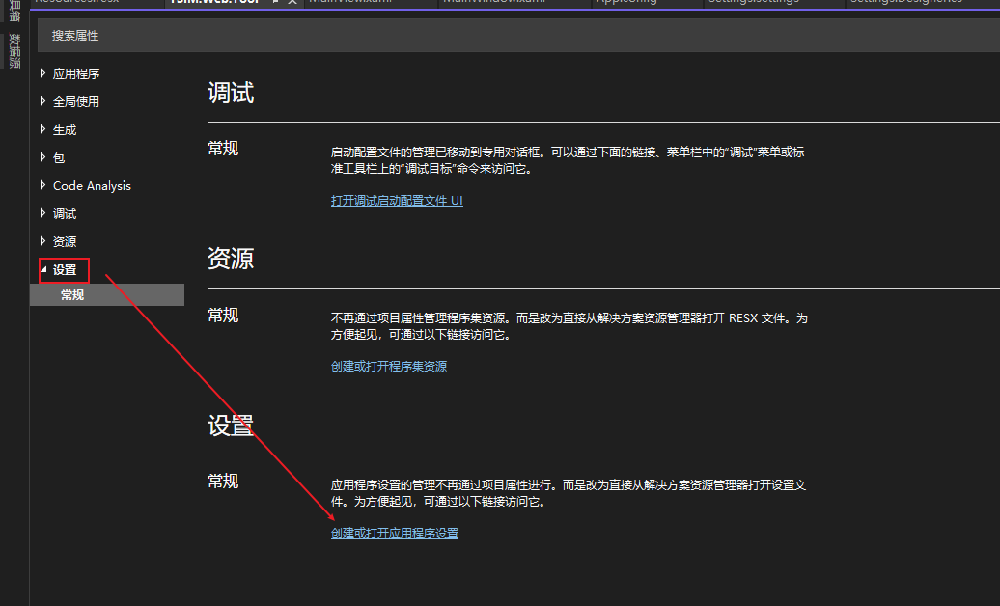

CSharp
项目设置
应用程序设置（Settings.settings）
在WPF、Winform、Web项目中都有应用程序设置，以下以WPF为例。
创建和打开配置文件

配置文件设计窗口

- 名称：变量名
- 类型：字符串、整数、布尔值、集合等。
- 范围：应用程序和用户
- 值：默认值
程序发布后，设置的数据存储在：程序集.exe.config 文件中，如你的程序集为 MyTool，对应的文件名为：MyTool.exe.config，内容如下：
<?xml version="1.0" encoding="utf-8"?>
<configuration>
//...
<userSettings>
<MyTool.Properties.Settings>
<setting name="Number" serializeAs="String">
<value>1</value>
</setting>
</MyTool.Properties.Settings>
</userSettings>
<applicationSettings>
<MyTool.Properties.Settings>
<setting name="Count" serializeAs="String">
<value>10</value>
</setting>
</MyTool.Properties.Settings>
</applicationSettings>
</configuration>
分别设置了用户范围的变量 Number，和应用程序范围的变量 Count，注意这里面修改用户设置的数据无效，但是可以修改应用程序的设置。
用户范围设置：默认情况下，用户特定的设置保存在用户配置文件目录下的 user.config 文件中。这个文件的位置因操作系统不同而有所不同，一般情况下会在以下路径中找到：
Windows 7/8/10: C:\Users\<用户名>\AppData\Local\<公司名>\<应用程序名>\<版本号>\user.config
Windows XP: C:\Documents and Settings\<用户名>\Local Settings\Application Data\<公司名>\<应用程序名>\<版本号>\user.config
❕ 注：公司名通过项目属性查看。
⚠️
<span style="color:red;font-weight:bold;">注：修改程序根目录下的 “MyTool.exe.config” 配置文件无效
应用程序范围设置：如果设置是应用程序范围的（而不是用户特定的），那么它们会保存在应用程序的配置文件中，通常是 App.config(程序集.exe.config) 或 Web.config（对于 Web 应用程序）。不过，这些文件中的设置是只读的，运行时的修改不会保存回这些文件。
修改设置：
// 读取设置值
int number = Properties.Settings.Default.Number;
// 修改设置值
Properties.Settings.Default.Number = 2;
// 保存设置值
Properties.Settings.Default.Save();
保存后，新的设置值会写入 user.config 文件中，下次启动应用程序时会读取这个值。
总结：
| 对比 | 应用程序范围 | 用户范围 |
|---|---|---|
| 存储位置 | 程序根目录：App.config(程序集.exe.config) 或 Web.config（对于 Web 应用程序） |
C:\Users\<用户名>\AppData\Local\<公司名>\<应用程序名>\<版本号>\user.config |
修改 App.config 文件有效 |
✔️ | ❌ |
| 可读 | ✔️ | ✔️ |
| 可写 | ❌ | ✔️ |
使用场景 ：
动态配置数据，如用户偏好、应用程序配置参数等。
应用程序资源（Resources.resx）
用途：管理应用程序的静态资源和多语言资源。
存储位置：通常定义在 .resx 文件中，这些文件可以包含字符串、图像、图标、文件等资源。
类型：可以包含各种类型的资源，如字符串、图像、图标、文件等。
使用场景：
- 存储应用程序的静态文本，支持多语言本地化。
- 存储应用程序所需的图像、图标等静态资源。
- 组织和管理资源文件，方便维护和更新。
.resx 文件示例
定义资源
你可以在 Visual Studio 中添加 .resx 文件并定义资源。例如，添加一个名为 Resources.resx 的资源文件，然后添加一些字符串资源：
Greeting->HelloFarewell->Goodbye
生成资源类
Visual Studio 会自动生成一个与 .resx 文件对应的资源类，你可以在代码中使用这些资源。假设你的命名空间是 MyApp，你可以这样使用：
using MyApp.Properties;
// 读取资源值
string greeting = Resources.Greeting;//注：若文件名称为：Resources.xx.resx 那么读取时为：Resources_xx.Greeting
string farewell = Resources.Farewell;
多语言支持（本地化） 为了支持多语言，你可以创建多个 .resx 文件，每个文件对应一种语言。例如：
Resources.resx（默认资源文件）Resources.en-US.resx（美国英语资源文件）Resources.fr-FR.resx（法国法语资源文件）
在不同语言的资源文件中，定义相同的键但值为对应语言的翻译。
运行时切换语言 通过更改应用程序的文化信息，可以在运行时切换语言：
using System.Globalization;
using System.Threading;
using MyApp.Properties;
// 切换到法国法语
Thread.CurrentThread.CurrentUICulture = new CultureInfo("fr-FR");
// 读取资源值
string greeting = Resources.Greeting; // 将会返回法语的问候语
应用程序资源与设置的区别总结
应用程序资源（Resources）:
- 用途：管理静态资源和支持多语言。
- 存储位置：.resx 文件。
- 类型：字符串、图像、图标、文件等。
- 使用场景：静态文本、图像、图标、多语言支持等。
应用程序设置（Settings）：
- 用途：存储和管理应用程序配置数据和用户设置。
- 存储位置：配置文件（如 App.config 或 user.config）。
- 类型：字符串、整数、布尔值、集合等。
- 使用场景：动态配置数据，如用户偏好、应用程序配置参数等。
- 通过理解这些区别，你可以更好地管理和组织 WPF 应用程序中的资源和设置，确保应用程序的灵活性和可维护性。
时间格式化
DateTime 格式化
dateTime.ToString("yyyy-MM-DD hh:mm:ss");
TimeSpan 格式化
常用：timeSpan.ToString(@"dd\.hh\:mm\:ss"); 或则 timeSpan.ToString("dd\\.hh\\:mm\\:ss");区别是否使用转义符号。
using System;
public class Example
{
public static void Main()
{
TimeSpan duration = new TimeSpan(1, 12, 23, 62);
string output = null;
output = "Time of Travel: " + duration.ToString("%d") + " days";
Console.WriteLine(output);
output = "Time of Travel: " + duration.ToString(@"dd\.hh\:mm\:ss");
Console.WriteLine(output);
Console.WriteLine("Time of Travel: {0:%d} day(s)", duration);
Console.WriteLine("Time of Travel: {0:dd\\.hh\\:mm\\:ss} days", duration);
}
}
// The example displays the following output:
// Time of Travel: 1 days
// Time of Travel: 01.12:24:02
// Time of Travel: 1 day(s)
// Time of Travel: 01.12:24:02 days
Linq
多个属性具有相同处理逻辑
使用 Expression 来实现
Expression：将强类型lambda表达式表示为表达式树形式的数据结构。该类不能被继承，当一个对象存在多个相同类型的属性，且这些属性控制的功能相同时,可以使用 Expression 来实现
- 有一组 Person, 需要遍历每个person，根据属性 A 或者 B，判断是说
Hello还是Bye - Person
public class Person
{
public string Name { get; set; }
public bool pA { get; set; }
public bool pB { get; set; }
}
- 创建 Person List
class ExpressionTest
{
List<Person> persons = new List<Person>();
public ExpressionTest()
{
persons.Add(new Person { Name = "Jerry", pA = true, pB = false });
persons.Add(new Person { Name = "Shin", pA = true, pB = false });
}
...
}
常规解法
- 分别写两个方法，根据属性A 或者 属性B 来判断
internal class ExpressionTest
{
List<Person> persons = new List<Person>();
public ExpressionTest()
{
persons.Add(new Person { Name = "Jerry", pA = true, pB = false });
persons.Add(new Person { Name = "Shin", pA = true, pB = false });
}
/* 需求： 遍历 persons， 根据 pA 或者 pB 的值，判断每个人是说 hello 还是 bye
* 常规写法： 分别些两个方法遍历判断
* Expression: 通过表达式实现通用写法
*
*/
#region 常规写法
private void SayHelloByA()
{
foreach (var p in persons)
{
if (p.pA)
Console.WriteLine($"[{p.Name}]\tSay Hello！");
else
Console.WriteLine($"[{p.Name}]\tSay Bye！");
}
}
private void SayHelloByB()
{
foreach (var p in persons)
{
if (p.pB)
Console.WriteLine($"[{p.Name}]\tSay Hello！");
else
Console.WriteLine($"[{p.Name}]\tSay Bye！");
}
}
#endregion
// 测试
public void Test()
{
SayHelloByA();// 输出: Say Hello!
SayHelloByB();// 输出: Say Bye!
}
}
- 存在的问题 ： 如果我们有多个属性 C D E F，那么我们就需要写多少方法，但是发现这些方法的逻辑都是一样的。总感觉很别扭，此时就要用到 Expression
Expression 写法
internal class ExpressionTest
{
List<Person> persons = new List<Person>();
public ExpressionTest()
{
persons.Add(new Person { Name = "Jerry", pA = true, pB = false });
persons.Add(new Person { Name = "Shin", pA = true, pB = false });
}
#region Expression
public void SayHello(Expression<Func<Person, bool>> expr)
{
var valProp = (PropertyInfo)(((MemberExpression)expr.Body).Member);
foreach (var p in persons)
{
bool isShow = (bool)valProp.GetValue(p, null);
if (isShow)
Console.WriteLine($"[{p.Name}]\tSay Hello！");
else
Console.WriteLine($"[{p.Name}]\tSay Bye！");
}
}
#endregion
// 测试
public void Test()
{
SayHello(x => x.pA);// 输出: Say Hello!
SayHello(x => x.pB);// 输出: Say Bye!
}
}
- 通过表达式，让调用者来确定条件的值。
泛型基类
无法创建显示类型的基类问题 解决方案：将泛型参数作为构造函数的参数，调用的函数中不要包含泛型参数，同时将函数提升为接口（新增接口），转换为面向接口编程
需求场景：
有多个数据结构，它们继承同一个基类，需要创建不同的 'Handler' 来处理不同的数据结构。
基类：
public class BaseClass{
public string Name{get;set;}
}
子类A
public class AClass：BaseClass{
}
子类B
public class BClass：BaseClass{
}
Handler base
public abstract class BaseHandler<T>{
public abstract void DoSomthing(T data);
}
Handler A
public class AHandler:BaseHandler<AClass>{
public override void DoSomthing(T data)
{
Console.WriteLine($"A handel {data.Name}");
}
}
Handler B
public class BHandler:BaseHandler<BClass>{
public override void DoSomthing(T data)
{
Console.WriteLine($"B handel {data.Name}");
}
}
处理逻辑(失败)
public void Handler(T data)
{
//这里无法这样声明，因为泛型需要显示的指定类型，然后如果显示的指定类型，就无法使用到达我们多态的需求
BaseHandler? = null;
if(typeof(T) == typeof(AClass))
return new AHandler();
if(typeof(T) == typeof(BClass))
return new BHandler();
BaseHandler.DoSomthing(data);
}
处理逻辑解读： 无法这样声明，因为泛型需要显示的指定类型，然后如果显示的指定类型，就无法使用到达我们多态的需求
解决办法：
- 将多态的概念转变为面向接口编程
- 将调用的函数提升为接口，并且接口不要包含泛型参数
- 将参数放在构造函数中初始化
- 使用工厂创建处理器
接口定义
public interface IHandler{
void DoSomthing();
}
处理器基类实现接口，并定义包含泛型参数的构造函数
public abstract class BaseHandler<T>:IHandler{
public T Data{get;set;}
public abstract void DoSomthing();
}
Handler A 新增 含泛型参数的构造函数
public class AHandler:BaseHandler<AClass>{
public AHandler(AClass data)
{
this.Data = data;
}
public override void DoSomthing(T data)
{
Console.WriteLine($"A handel {Data.Name}");
}
}
Handler B 新增 含泛型参数的构造函数
public class BHandler:BaseHandler<BClass>{
public BHandler(BClass data)
{
this.Data = data;
}
public override void DoSomthing()
{
Console.WriteLine($"B handel {Data.Name}");
}
}
增加创建工厂
public class HandlerFactory
{
public static IHandler CreateHandler<T>(T data) where T : BaseClass
{
if (typeof(T) == typeof(AClass))
{
return new AHandler(data as AClass);
}
if (typeof(T) == typeof(FlowPsdSingelOpen))
{
return new BHandler(data as BClass);
}
throw new ArgumentException("HandlerFactory: CreateHandler: Unsupported type: " + data.GetType());
}
}
处理逻辑(使用接口)
public void Handler(T data)
{
//使用工厂创建
BaseHandler= HandlerFactory.CreateHandler(data);
BaseHandler.DoSomthing();
}
开源项目
- 一款基于.Net WinForm的节点编辑器：纯GDI+绘制 使用方式非常简洁 提供了丰富的属性以及事件 可以非常方便的完成节点之间数据的交互及通知 大量的虚函数供开发者重写具有很高的自由性。